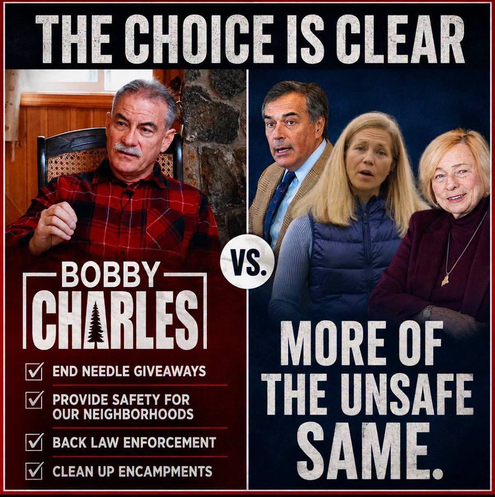
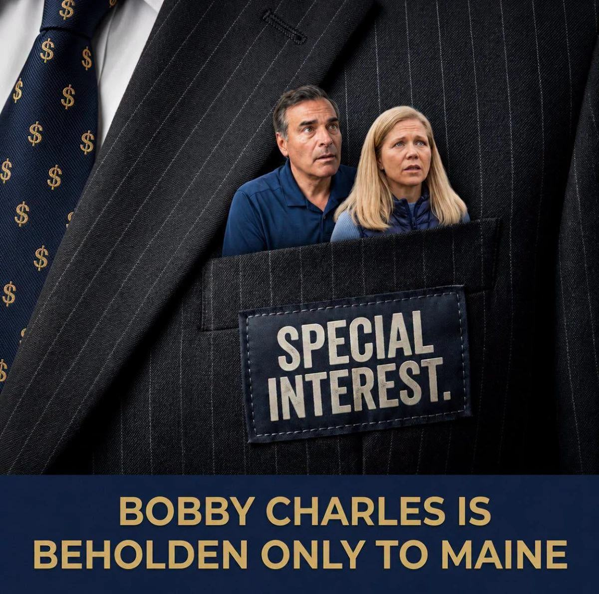

Setlist / Video político
Bobby Charles for Maine Governor
Video, motion y diseño para redes de la campaña de Bobby Charles a gobernador de Maine.
Una línea gráfica de campaña en azul marino, rojo y blanco: frases cortas en tipografía condensada, retratos del candidato y comparaciones directas.
Más de veinte piezas producidas entre video y gráficas: Cut crime, Cut taxes, Not a career politician y The choice is clear.
Ver los videos en Behance436K+vistas de video
+20piezas producidas
20K+interacciones en redes






 Siguiente en el setlist
MercyMe 2025
Siguiente en el setlist
MercyMe 2025